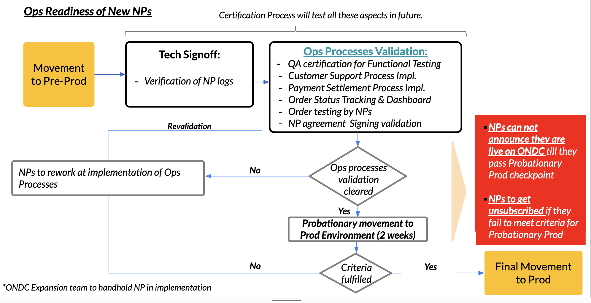

8. Production
Production is the live environment where live transactions take place with transfer of goods and services. Your team must have met the compliance requirements for moving to Production.
Successfully surpassing the threshold for functional testing and complying with the final checklist on Pre-Production will enable an NP to move to Production environment
ONDC Production Endpoints
Registry Endpoint
https://prod.registry.ondc.org/lookuphttps://prod.registry.ondc.org/ondc/vlookupGateway Endpoint
https://prod.gateway.ondc.org/searchhttps://prod.gateway.ondc.org/on_searchRegistry
The process for entry to pre-production registry can be found in the following document:
https://github.com/ONDC-Official/developer-docs/blob/main/registry/Onboarding%20of%20Participants.md
Probationary Period
All network participants moving to Production will be on probation for a period of 2 weeks. Only upon fulfillment of threshold for successful transactions completed will move to Production be made official or else participants will be moved back to Pre-Production where ample support will be provided to ensure their success on Production.
All Network Participants moving to Production will be on probation for a period of 2 weeks maximum. Only upon clearing validation for Ops processes will the move to Production be made official.
If the thresholds are not met, participants will be moved back to Pre-Production where ample support will be provided to ensure their success on Production.
This is to ensure that the sanctity of the Production environment is maintained.
